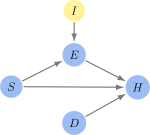
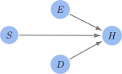

Causal Graphs#
Definition 8 (Directed Acyclic Graph)
A causal graph is a Bayesian network with causal semantics.
Each node represents a random variable.
Each edge encodes causal dependencies between each random variable.
If a random variable \(Y\) is connected \(X\) by a directed edge (\(Y\rightarrow X\)), then \(Y\) causes \(X\).
By “cause” we mean an intervention. This is expressed using do-calculus: \(\textnormal{do}(Y = y)\) has an effect on \(X\).
Interventions#
Motivating Example#
Let’s consider a simple causal graph with four (binary) variables:
Exercise: This node \(E\) denotes the physical activity level of a person. This is the treatment.
Stress: This node \(S\) denotes the stress level of a person.
Diet: This node \(D\) denotes the quality of a person’s diet.
Health: This node \(H\) denotes the overall health status of a person. This is the effect.

Fig. 1 Causal Graph Example
In the above graph, the variable \(S\) is the confounder. Without an intervention, it is hard to distinguish the effects of Exercise (\(E\)) on Health (\(H\)) from the effects of Stress (\(S\)) - Health and Exercise are correlated with Stress.
We notationally capture an intervention using the do-operator, which we denote \(\text{do}(E = \text{high})\).
Intervention Variable#
There are multiple equivalent ways of capturing an intervention mathematically. The dominant approach is to perform a graph mutation by removing all incoming nodes to the random variable \(E\). We first consider an alternative approach using intervention variables.
An intervention variable is a binary random variable that ensures the treatment variable takes a specific value regardless of any of the other variables present within the graph.
We can introduce an intervention variable \(I\) on exercise as follows:

Fig. 2 Intervention Variable \(I\)
To isolate the effect of exercise, we are interested in the probability:
We can compute this probability using the known conditional probabilities using probability rules:
We define the do-operator as follows: \(\textnormal{Pr}(H | \textnormal{do}(E = \textnormal{high})) = \textnormal{Pr}(H | I = \textnormal{high})\).
See the footnote[1] for more details.
Graph Mutation#
The “standard” approach to compute \(\text{Pr}(H | \text{do}(E = \text{high}))\) is to use graph mutation and employ “do-calculus”.
The operation \(\text{do}(E = \text{high})\) sets \(E\) to be “high”, irrespective of its other causes. The first step is to mutate the graph, by removing all the edges incoming to \(E\). This new graph is denoted \(G_{\underline{E}}\).

Fig. 3 Graph Mutation \(G_{\underline{E}}\)
The next step is to compute \(\text{Pr}(H | E = \text{high})\) in this new graph. We can do this as follows:
We define \(\textnormal{Pr}(H | \textnormal{do}(E = \textnormal{high})) = \textnormal{Pr}(H | E = \textnormal{high})\), where we compute the RHS using the mutated graph.
Do-calculus#
In general, it may be difficult by hand to compute probability of an event after an intervention. Therefore, it is helpful to define multiple
There are three rules of do-calculus
Rule 1 (Insertion/Deletion of Observations):
\[ \text{Pr}(Y | \text{do}(X), Z, W) = \text{Pr}(Y | \text{do}(X), W) \]Applies if \(Y\) is independent of \(Z\) given \(X\) and \(W\) in the modified graph \(G_{\underline{X}}\).
Rule 2 (Action/Observation Exchange):
\[ \text{Pr}(Y | \text{do}(X), \text{do}(Z), W) = \text{Pr}(Y | \text{do}(X), Z, W) \]Applies if \(Y\) is independent of \(Z\) given \(X\) and \(W\) in the modified graph \(G_{\underline{X}, \underline{Z}}\).
Rule 3 (Insertion/Deletion of Actions):
\[ \text{Pr}(Y | \text{do}(X), \text{do}(Z), W) = \text{Pr}(Y | \text{do}(X), W) \]Applies if \(Y\) is independent of \(Z\) given \(X\) and \(W\) in the graph obtained by removing arrows pointing to \(X\) but treating \(Z \) as observed.
The following provides a derivation of these rules, using the intervention variable approach.